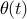

As we have seen, the dynamics of the pendulum can be altered by design: reducing the friction makes the pendulum swing for a longer time before coming to rest, and shortening the pendulum makes it swing with higher natural frequency. However, it may be expensive or impractical to use such physical design principles (doubling the natural frequency of a pendulum requires it to be four times as long, i.e. four times as expensive, taking up four times as much space). Furthermore, such designs are sensitive to external disturbances. It turns out that we can do much better by thinking a little extra. Stay on!
Control of Pendulum
Let us re-introduce the external torque  in the dynamic equations for the pendulum. The linearized equations of motion become
in the dynamic equations for the pendulum. The linearized equations of motion become
where . Now, let us choose to be a linear combination of the deviation and rate of deviation from the stable equilibrium, i.e.

We then see that the controlled system can be described by a linear ODE
where
Thus, the controlled system can be described by a linear ODE, whose coefficients ( and ) can be choosen arbitrarily. In terms of the physical system, this means that the proper choice of and allows us to assign arbitrary dynamics to the system.
As an example, let us assume that the desired dynamics is given by
i.e. that and and the characteristic polynomial has a double root at . By using the relationships (2) to solve for and , we find that the desired dynamics can be obtained by the controller gains
It is straghtforward to repeat the calculations for any other desired dynamics.
The algorithm (1) for computing the controlled input is called a proportional-derivative controller, or PD-controller for short, since the magnitude of is proportional to the angular error and its derivative. When the controlled input depends on the state of the system ( and in this case), we say that the controller uses feedback. Such controllers have many advantages (but also some drawbacks and fundamental limitations) that you will learn more about in your first automatic control course. But rather than dwelling into the theory now, let’s try to get some hands-on experience using our Lego Mindstorm kits [continue »].